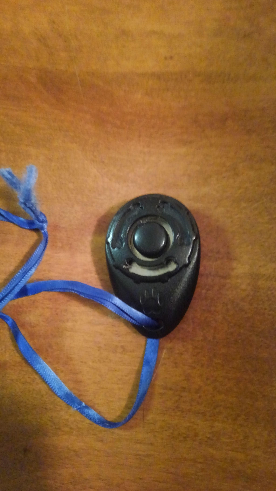

Clicker training is a great way to communicate with your pet. Dogs and cats learn quickly when a clicker is used to accurately mark the desired behavior. For those who are unfamiliar with this method of training, I will provide a brief summary before explaining the benefits of training with a clicker.
Clicker training is training that uses a small device that makes a distinct click sound. This sound is paired with food or other thing that your dog or cat enjoys. Once your pet associates the sound of the click with the following reward, it can be used to communicate when your dog or cat has done something you would like to see performed again. It provides a clear concise way of telling your pets exactly when they did the correct behavior. Every time you click it should be followed by some form of reinforcement. The click marks the behavior and buys you time to get your pet a piece of food. Some people use a word or click their tongue to mark correct behavior instead of purchasing a clicker.
When studied, dogs learned a new skill faster with clicker training. In my personal experience, the cats I have trained also seem to learn a new skill faster using a clicker to communicate correct responses. It helps you bond with your pet and makes you the deliverer of all awesome things. It also helps you notice all the good things your pet is doing. The more you reinforce the things you like the more they will occur. Sitting nicely will happen more if your dog gets a piece of food for doing so. Likewise, if your cats are rewarded for sitting or climbing on the cat tree, they will spend more time there and less time on other elevated surfaces.
If you would like help getting started or have encountered problems in your training, call or email me to set up a session.